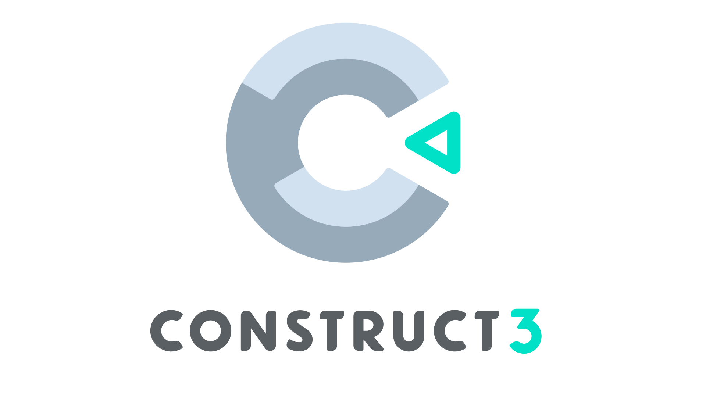

Meu nome é Gustavo Furini.
Estou no primeiro semestre do curso de Ciências da Computação na PUCPR.
Esses foram os meus os projetos que eu e meu grupo elaboramos nas aula de Expêriencia Criativa: Navegando na Computação.
JOGUE
ACESSE
VEJA NO GITHUB
